Floor one
S9 &S7 Artist Series
Repair Manual
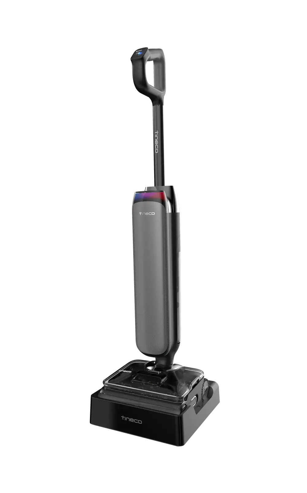
S9 Artist S7 Artist
History
| No | Date | Comments | Version | ISSUE | Approve |
|---|---|---|---|---|---|
| 1 | 25/03/27 | First Draft | 1.0 | ||
| 2 | 25/08/05 | Additional Model Information | 2.0 | 徐长春 | |
Tools
Electric screwdriver\Long-nose pliers\Slotted screwdriver\Zip tie\Scissors
Range of Product
| No | Product Name | Factory Serial Model | SKU | Remark |
|---|---|---|---|---|
| 1 | Floor One S9 Artist | CL2343M-01 | FW2C0400DE | |
| 2 | FLOOR ONE S9 Artist Steam | CL2343V-04 | FW2A1200CL | |
| 3 | Floor One S9 Artist Premium | CL2343M-03 | FW2C0700DE | |
| 4 | FLOOR ONE S9 Artist Pro | CL2343B-01 | FW2B0100IL | |
| 5 | Floor One S9 Artist Pro | CL2343R-01 | FW2B0500RU | |
| 6 | FLOOR ONE S9 Artist Steam | CL2343N-01 | FW2A0500US | |
| 7 | FLOOR ONE S9 Artist Pro | CL2343Q-01 | FW2B0300AU | |
| 8 | FLOOR ONE S9 Artist Steam | CL2343V-02 | FW2A1000IL | |
| 9 | FLOOR ONE S9 Artist Steam | CL2343O-01 | FW2A0700AU | |
| 10 | Floor One S9 Artist | CL2343K-03 | FW2C0600IL | |
| 11 | Floor One S9 Artist | CL2343K-04 | FW2C0800AE | |
| 12 | FLOOR ONE S9 Artist Pro | CL2343P-01 | FW2B0100US | |
| 13 | FLOOR ONE S9 Artist Steam | CL2343V-01 | FW2A0900ID | |
| 14 | Floor One S9 Artist | CL2343K-01 | FW2C0100MY | |
| 15 | FLOOR ONE S9 Artist Steam | CL2343V-03 | FW2A1100HK | |
| 16 | Floor One S9 Artist | CL2343K-02 | FW2C0200ID | |
| 17 | Floor One S7 Artist Premium | CL2540-02 | FW2D0200DE | |
| 18 | Floor One S7 Artist | CL2540A-01 | FW2D0400US | |
Product Differences
S9 Artist
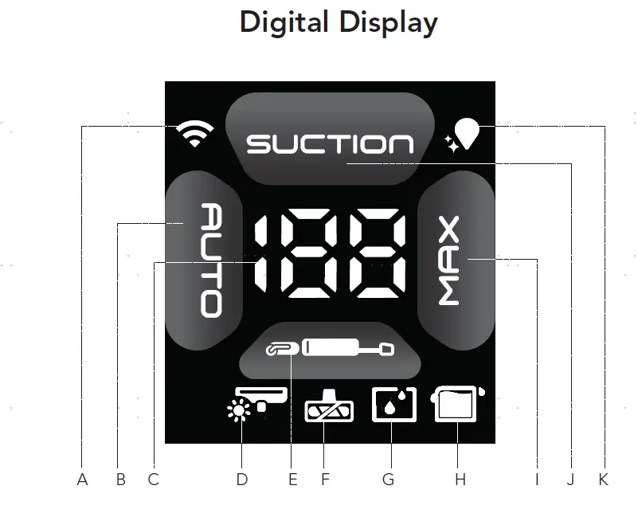
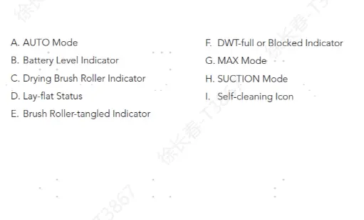
S7 Artist
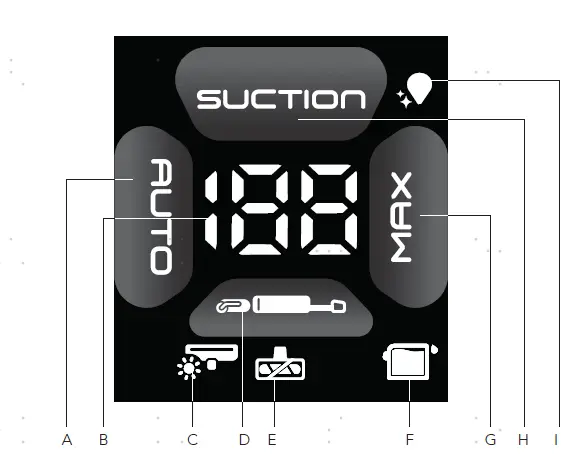
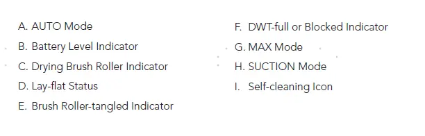
Differences:
1. No WiFi and no clean water tank low water alert;
2. The floor brush has no large wheel assist, and both the clean water tank and the floor brush have been changed to be the same as the S6 Stretch.
Range of Spare Part
| No | Spare Part Name | Remark | Photo |
|---|---|---|---|
| 1 | Handle | 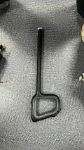 | |
| 2 | Clean Water Tank | 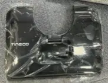 | |
| 3 | Dirt Water Tank | 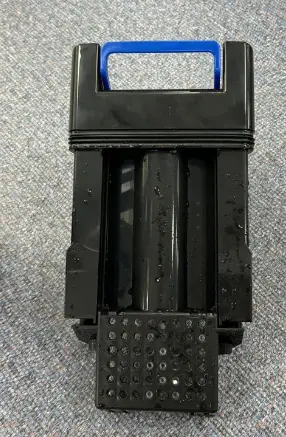 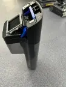 | |
| 4 | plastic part | Dirty water tank lid | |
| 5 | plastic part | Dirty water tank body | 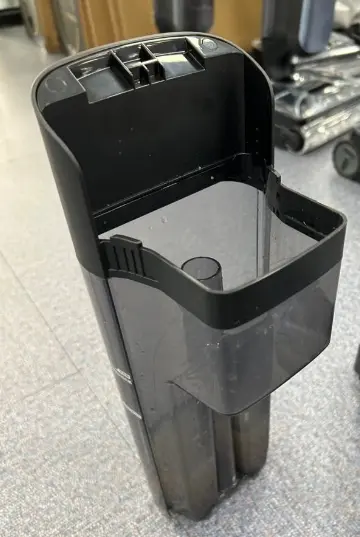 |
| 6 | Scraper | 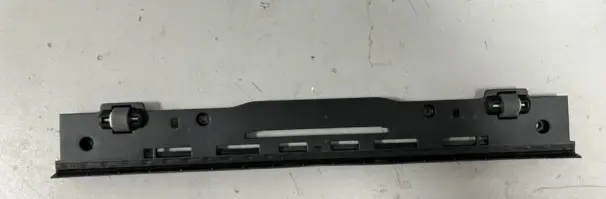 | |
| 7 | Switch | micro Switch | 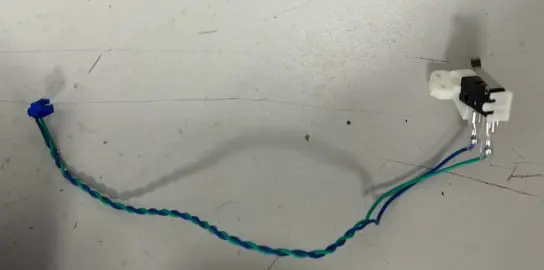 |
| 8 | plastic part | water valve | 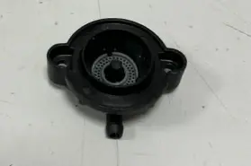 |
| 9 | Repair Wheel | 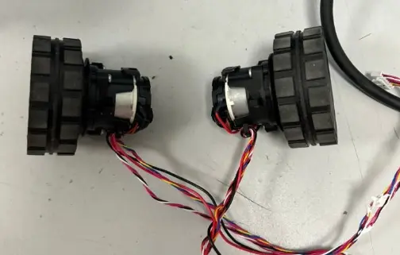 | |
| 10 | Wire | in brush part | 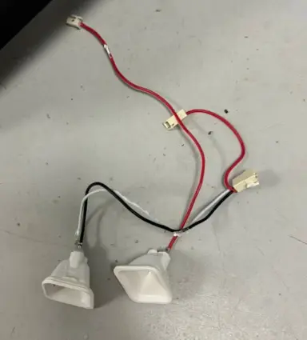 |
| 11 | Pump | water pump | 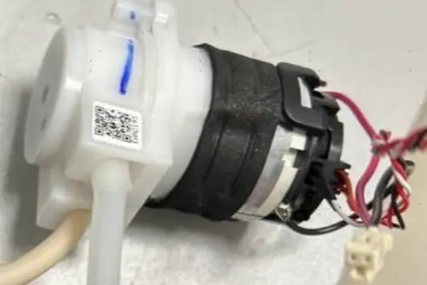 |
| 12 | Sensor | water level sensor | 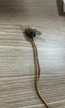 |
| 13 | plastic part | Rotary union with Bottom Case | 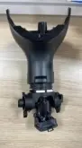 |
| 14 | PCBA | brush part | 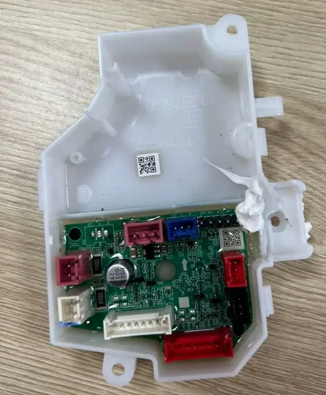 |
| 15 | plastic part | decorative cover | |
| 16 | PCBA | RGB light panel | 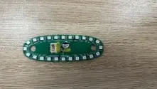 |
| 17 | Motor | main motor | 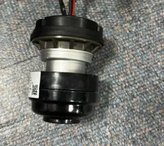 |
| 18 | Battery | 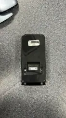 | |
| 19 | Motor | brush motor | 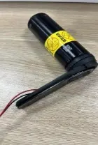 |
| 20 | Boiler | Heating element in drying dock | 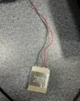 |
| 21 | Motor | Fan Assembly in drying dock | 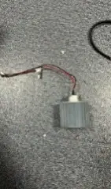 |
| 22 | PCBA | PCBA in drying dock | 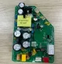 |
| 23 | plastic part | Screw Plug、Pallet Support Pad （refer to repair manual) | 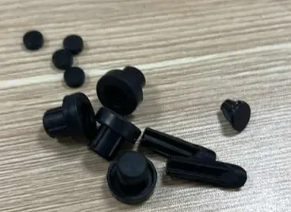 |
| 24 | Wire | in drying dock | 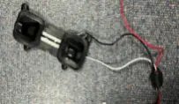 |
| 25 | Charging Base | 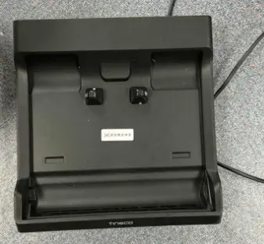 | |
| 26 | Pump | Water Electrolysis Assembly *only available in select models. Please confirm availability based on local product offerings. | 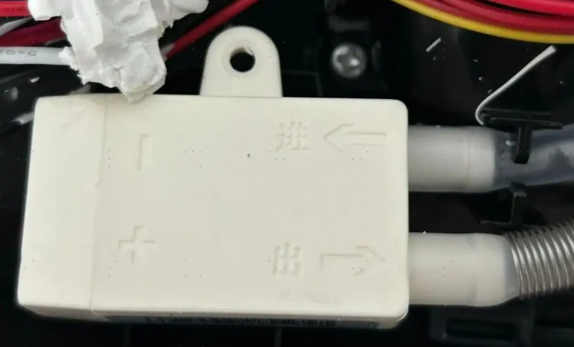 |
| 27 | plastic part | Available colors may vary by region. | |
| 28 | Wire | power cord | |
| 29 | PCBA | main PCBA | 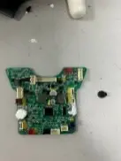 |
| 30 | Brush Roller | 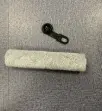 | |
| 31 | HEPA Assy | 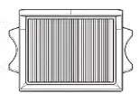 | |
| 32 | boiler | 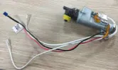 | |
| 33 | Pump | steam pump | 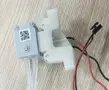 |
| 34 | Pump | Steam Pressure Relief Valve | 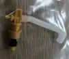 |
| 35 | Pump | air pump | 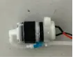 |
Tear down guide
Tear down brush part
Disassemble all accessories (* Available colors may vary by region.)
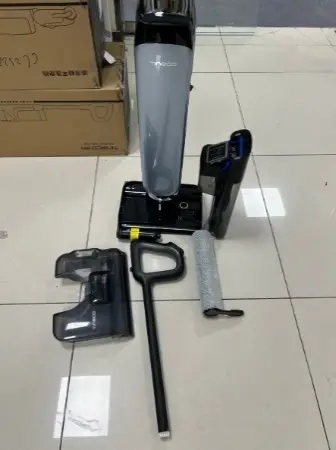
1.2 Unscrew the screw and remove the scraper
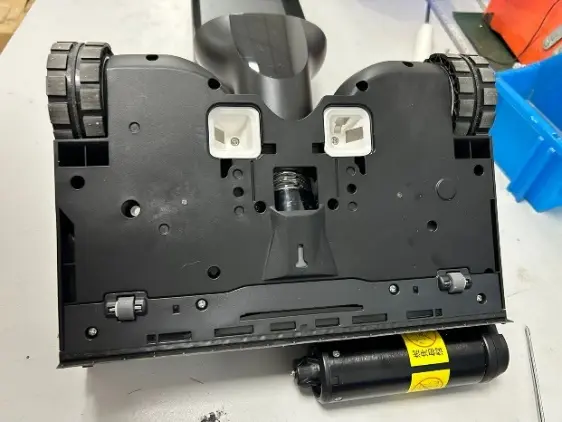
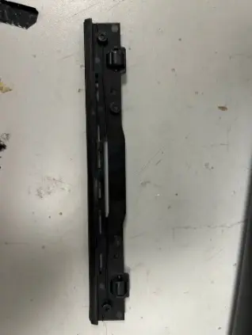
Unscrew the other screws, open the upper cover of the brush, and unplug the terminal of micro switch.
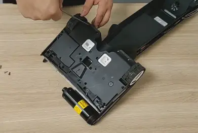
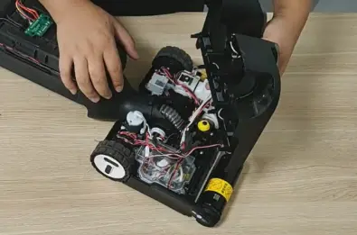
1.4 Remove the screws and take off the micro switch.
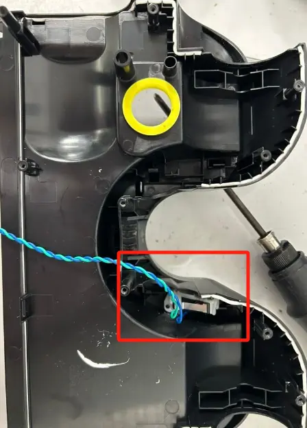
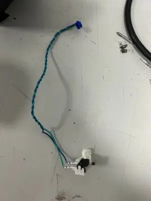
1.5 Remove the top cover of the brush PCBA.
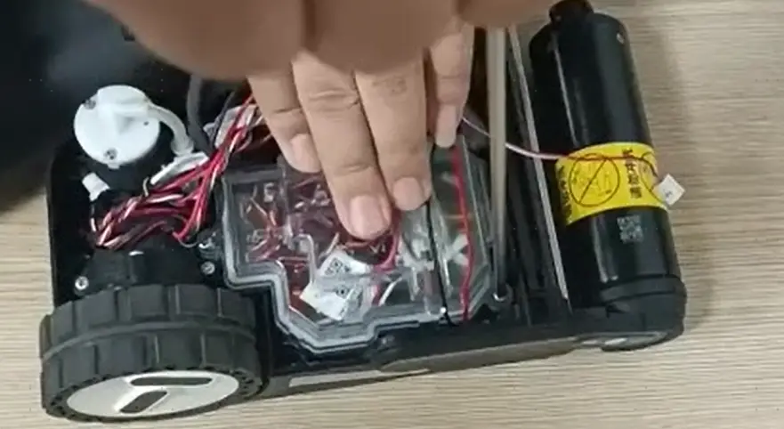
Note: The internal components of steam and non-steam brush heads differ. Please refer to the actual product specifications.
non-steam version refer to 1.6-1.8
1.6 Organize the wiring inside the brush. Disconnect the terminals from the brush PCBA, unscrew the screws, and remove the brush PCBA.
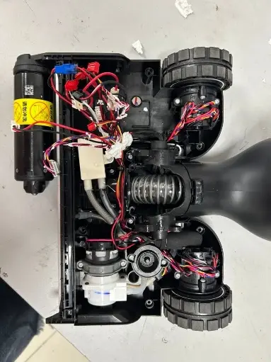
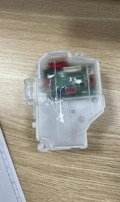
1.7. Unscrew the screws, disconnect the water pipe, and remove the electrolysis water component.（* Only some models in certain regions have this part. If not available, please refer to the next steps.）
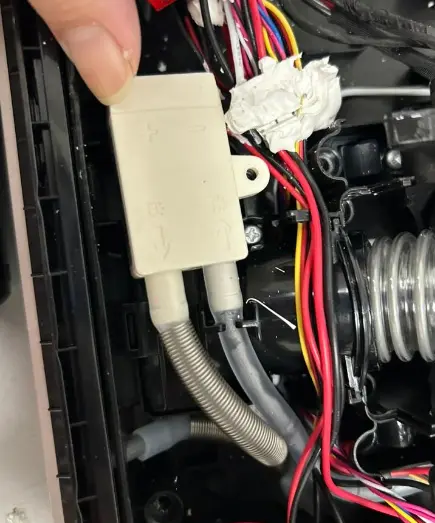
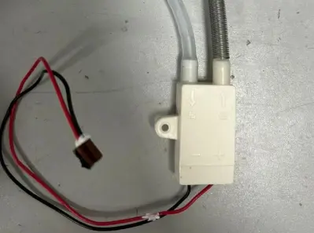
1.8. Remove the screws, water pump fixing bracket, disconnect the water pipe, and remove the water pump. Unscrew the screws and take out the drain valve connector and the liquid level sensor.
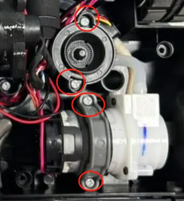
steam version refer to 1.9-1.12
1.9 Organize the wiring inside the brush. Disconnect the terminals from the brush PCBA, unscrew the screws, and remove the brush PCBA.
1.10 unscrew the screws, and take out air pump.
1.11 Organize the cable harnesses and water tubes, then remove the component fixing bracket by unscrewing the screws. Detach the steam pump, water pump, and boiler (including water level sensor，Steam Pressure Relief Valve and water valve).
1.12 Note: If equipped, the water electrolysis component is located beneath the water pump.
1.13 Unscrew the wheel's fixing screws, organize the wiring harness, and then remove the large wheel. (*Note: The wire lengths for the left and right wheels are different and need to be distinguished.)
1.14 Organize the wiring harness and use a screwdriver to push out the brush charging component.
1.15 Unscrew the screws and remove the brush motor decorative cover. Unscrew the screws and remove the brush motor assembly.
2. Tear down rotary union
2.1 Remove the adapter fixing screws. Organize the wiring harness and separate rotary union from the bottom of the brush.
2.2 Use a screwdriver to pry open the screw plugs at the bottom of the machine, then unscrew the screws. Remove the decorative cover of the machine and remove the screws beneath the dirty water tank to take off the bottom decorative cover of the machine.
2.3 Pry open the latches to separate the bottom decorative cover.
2.4 Unscrew the screws and remove the dirt sensor assembly.
Tear down main body
3.1 Use a flathead screwdriver to pry up the decorative top cover of the machine (be careful not to damage the cover).

Use a suction cup to open the display cover, or use a sharp object to pry open the display cover (be careful not to damage the display cover).
3.3 Unscrew the screws on the decorative cover and the body, then remove the decorative cover from the body.
3.4 Unscrew the screws and gently pry open the RGB light board with a flathead screwdriver. Disconnect the terminal and remove the RGB light board. Take off the white plastic part.
3.5 Push upward on the front cover and the decorative covers on the left and right sides of the body, then remove the front cover. (*The color of the front cover will depend on the actual product shipment.)
3.6 Unscrew the fixing screws and remove the plastic casing of the PCBA. Disconnect the terminal and remove the PCBA.
3.7 Use a screwdriver to pry open the screw plugs of the battery pack, unscrew the screws, and remove the battery.
3.8 Use a screwdriver to unscrew the screws, and use a flathead screwdriver to pry off the main motor. Remove the motor cover and take out the main motor.
3.9 Unscrew the remaining screws on the body and remove the rear decorative cover.
S7 Artist
Teardown Assy Brush Part(Scraper& Brush PCBA)
Unscrew 4pcs screws and disassembly scraper

Unscrew Screws and disassembly cover

Unscrew Screws and replug all terminal to replace Brush PCBA

Teardown Assy Brush Part(Micro Switch& CWT Drain Valve)
Refer to the steps 4.0 to disassembly the Scraper& Brush PCBA
Unscrew Screws to replace Micro Switch

Unplug pipe to replace CWT Drain Valve
Teardown Assy Brush Part(Lay Flat Sensor & Water Level Sensor)
Refer to the steps 4.0 to disassembly the Scraper& Brush PCBA
Unscrew screws to replace Lay Flat Sensor

Unplug pipe to replace Water Level Sensor

Teardown Assy Brush Part(Brush Roller Motor & Pump& Spray Water Plate)
Refer to the steps 4.0 to disassembly the Scraper& Brush PCBA
Unscrew screws to replace Brush Roller Motor

Unscrew screws and unplug pipe to replace Pump
Unscrew screws and unplug pipe to replace Spray Water Plate
Teardown Assy Brush Part(Body Charging Wire)
Refer to the steps 4.0 to disassembly the Scraper& Brush PCBA
Disassembly to replace Brush Roller Motor
Teardown Rotary union
Refer to the steps 4.0~8.0 to disassembly the Assy Brush Part
Unscrew screws and disassembly Rotary union
Repair guide
| Note: When Main Motor Failure should be test whether lay flat sensor is failure | |
|---|---|
| Test method | 1.Turn on voice 2.Turn on appliance and lay flat it，Check whether there is a voice prompt on the first times lay flat? |
| Condition1： | No voice →Lay Flat Sensor is failure→ please replace Lay Flat Sensor |
| Condition2： | voice prompt：Rotate the body to the central position for lay-flat cleaning → Lay Flat Sensor is OK → don't need to replace |
| Failure System | Failure Phenomenon | No | Failure Mode | Repair Solution | Spare Parts |
|---|---|---|---|---|---|
| Water circulation system failure | No/less spray water | 1 | CWT failure | replace CWT | CWT |
| 2 | spray hole blocked | clean spray hole | maintenance | ||
| 3 | water valve blocked or damaged | remove blockage or replace water valve | water valve | ||
| 4 | pump failure | replace water pump | water pump | ||
| 5 | brush PCBA failure | replace brush pcba | brush pcba | ||
| 6 | main pcba failure | replace main pcba | main pcba | ||
| 7 | pipe blocked | replace water pipe | water pipe | ||
| 8 | pipe bent or broken | fix or replace pipe | water pipe | ||
| 9 | Water Electrolysis Assembly failure | replace Water Electrolysis Assembly | Water Electrolysis Assembly | ||
| 10 | water level sensor blocked | replace water level sensor | water level sensor | ||
| leaking water | 11 | Debris channel /Air duct blocked | Clean blockage from debris channel，around the brush roller and suction hose;Dry and clean HEPA;Empty and clean the DWT | maintenance | |
| 12 | CWT damaged | replace CWT | CWT | ||
| 13 | DWT damaged | replace DWT | DWT | ||
| 14 | pump failure | replace pump | pump | ||
| 15 | water valve damaged | replace water valve | water valve | ||
| 16 | water pipe loose | Re-plug water pipe | water pipe | ||
| 17 | Sewage recovery pipe damaged | replace sewage recovery pipe | Rotary union | ||
| 18 | water pipe damaged | replace water pipe | water pipe | ||
| 19 | water level sensor broken | replace water level sensor | water level sensor | ||
| no suck up water | 20 | Debris channel /Air duct blocked | Clean blockage from debris channel，around the brush roller and suction hose;Dry and clean HEPA;Empty and clean the DWT | maintenance | |
| 21 | HEPA not installed properly | reinstall HEPA properly | maintenance | ||
| 22 | brush roller & HEPA worn or damaged | replace brush roller&HEPA | brush roller&HEPA | ||
| 23 | scraper worn or damaged | replace scraper | scraper | ||
| 24 | Sewage recovery pipe damaged | replace sewage recovery pipe | Rotary union | ||
| 25 | motor failure | replace main motor | main motor | ||
| 26 | brush motor failure | replace brush roller motor | brush roller motor | ||
| 27 | brush PCBA failure | replace brush PCBA | brush PCBA | ||
| 28 | main pcba failure | replace main PCBA | main PCBA | ||
| charging system failure | No response when charging | 29 | power cord failure | replace power cord | power cord |
| 30 | charging pins in drying dock damaged | replace wire in drying dock | wire in drying dock | ||
| 31 | main body wire damaged | replace wire in main unit | wire in main unit | ||
| 32 | battery pack failure | replace battery pack | battery pack | ||
| 33 | PCBA in drying dock failure | replace PCBA in drying dock | PCBA in drying dock | ||
| 34 | brush PCBA failure | replace brush PCBA | brush PCBA | ||
| 35 | Main PCBA failure | replace main PCBA | main PCBA | ||
| 36 | display screen failure | replace display screen | display screen | ||
| Battery level indicator flashes several times and then goes off, then the machine stop charging; battery level under 100% and the indicator unable To Increase;battery level drop when in charging | 37 | battery pack failure | replace battery pack | battery pack | |
| 38 | PCBA in drying dock failure | replace PCBA in drying dock | PCBA in drying dock | ||
| 39 | brush PCBA failure | replace brush PCBA | brush PCBA | ||
| 40 | Main PCBA failure | replace main PCBA | main PCBA | ||
| Poor charging contact | 41 | charging pins in drying dock damaged | replace wire in drying dock | wire in drying dock | |
| 42 | main body wire damaged | replace wire in main unit | wire in main unit | ||
| 43 | power cord failure | replace power cord | power cord | ||
| abnormal noise during charging | 44 | Fan Assembly in drying dock failure | replace Fan Assembly | Fan Assembly | |
| 45 | PCBA in drying dock failure | replace PCBA in drying dock | PCBA in drying dock | ||
| 46 | Main PCBA Failure | Replace Main PCBA | Main PCBA | ||
| 47 | Battery Pack Failure | Replace battery pack | Battery Pack | ||
| Burnt smell during charging | 48 | Main PCBA failure | replace main PCBA | main PCBA | |
| 49 | drying dock failure | replace drying dock | drying dock | ||
| 50 | battery pack failure | replace battery pack | battery pack | ||
| Turn on failure | turn on but no reaction , screen not light up | 51 | handle failure | replace handle | handle |
| 52 | battery pack failure | replace battery pack | battery pack | ||
| 53 | Main PCBA failure | replace main PCBA | main PCBA | ||
| After pressing the power button, the display lights up, but it doesn't work after reclining the unit | 54 | Micro switch failure | replace Micro switch | Micro switch | |
| 55 | Brush PCBA Failure | Replace Brush PCBA | Brush PCBA | ||
| 56 | Main PCBA failure | replace main PCBA | main PCBA | ||
| stop running after several seconds | 57 | motor failure | replace motor | motor | |
| 58 | battery pack failure | replace battery pack | battery pack | ||
| 59 | Main PCBA failure | replace main PCBA | main PCBA | ||
| stop running after several times screen dies out | 60 | battery pack failure | replace battery pack | battery pack | |
| 61 | motor failure | replace motor | motor | ||
| 62 | Main PCBA failure | replace main PCBA | main PCBA | ||
| mode switch failure | switch mode but no reaction | 63 | handle failure | replace handle | handle |
| 64 | Main PCBA failure | replace main PCBA | main PCBA | ||
| switch mode but auto power-off | 65 | Main PCBA failure | replace main PCBA | main PCBA | |
| 66 | battery pack failure | replace battery pack | battery pack | ||
| 67 | motor failure | replace motor | motor | ||
| False alarm | DWT water is full but no alarm/Water is not full but still alarm | 68 | DWT full | Empty/clean the DWT | maintenance |
| 69 | DWT failure | replace DWT | DWT | ||
| 70 | DWT Signal Wire Failure | Replace DWT Signal wire | DWT Signal Wire | ||
| 71 | Main PCBA failure | replace main PCBA | main PCBA | ||
| CWT have enough water but still alarm | 72 | CWT failure | replace CWT | CWT | |
| 73 | spray hole blocked | clean spray hole | maintenance | ||
| 74 | water valve blocked or damaged | remove blockage or replace water valve | water valve | ||
| 75 | pump failure | replace pump | pump | ||
| 76 | pipe blocked | replace water pipe | water pipe | ||
| 77 | pipe bent or broken | fix or replace pipe | water pipe | ||
| 78 | water level sensor blocked or damaged | replace water level sensor | water level sensor | ||
| 79 | Brush PCBA Failure | Replace Brush PCBA | Brush PCBA | ||
| 80 | main PCBA failure | replace main pcba | main pcba | ||
| CWT have no water but not alarm | 81 | The Water level sensor has water remain inside | It tested okay after being turned up to the max mode for 30s | NFF | |
| 82 | water level sensor failure | replace water level sensor | water level sensor | ||
| 83 | Water pipe in front of the water level sensor blocked | replace water pipe | water pipe | ||
| 84 | Brush PCBA Failure | Replace Brush PCBA | Brush PCBA | ||
| 85 | main PCBA failure | replace main PCBA | main PCBA | ||
| Brush roller indicator blinking | 86 | Brush roller blocked or heavily worn | replace Brush roller | Brush roller | |
| 87 | brush roller motor failure | replace brush roller motor | brush roller motor | ||
| 88 | Brush PCBA Failure | Replace Brush PCBA | Brush PCBA | ||
| 89 | Main PCBA failure | replace main PCBA | main PCBA | ||
| iloop ring always red when suck nothing dirty;iloop ring always blue even suck dirty water (or other colored liquid) | 90 | Debris channel /Air duct blocked | Clean blockage from debris channel，around the brush roller and suction hose;Dry and clean HEPA;Empty and clean the DWT | maintenance | |
| 91 | dirty sensor failure | replace dirty sensor | dirty sensor | ||
| 92 | Main PCBA failure | replace main PCBA | main PCBA | ||
| 93 | RGB light panel failure | replace RGB light panel | RGB light panel | ||
| screen display malfunction | screen not reaction/display incomplete/display blinking | 94 | display screen failure | replace display screen | display screen |
| 95 | Main PCBA failure | replace main PCBA | main PCBA | ||
| RGB light panel malfunctions (no reaction/display incomplete/display blinking) | 96 | RGB light panel failure | replace RGB light panel | RGB light panel | |
| connect to network failure | WiFi/Mute/Language Switch Button no reaction | 97 | handle failure | replace handle | handle |
| 98 | Main PCBA failure | replace main PCBA | main PCBA | ||
| abnormal noise | main motor noise | 99 | main motor failure | replace main motor | main motor |
| noise from brush part | 100 | Brush roller blocked, worn or damaged | Clean blockage from debris channel，around the brush roller and suction hose, or replace brush roller | brush roller | |
| 101 | scraper dirty, worn or damaged | replace scraper | scraper | ||
| 102 | The small wheel noisy | replace the small repair wheel | small repair wheel | ||
| 103 | brush motor failure | replace brush motor | brush motor | ||
| 104 | pump noise | replace pump | pump | ||
| Self-cleaning malfunction | press the self-cleaning button,Voice Prompt“Please place appliance on charging dock",and the self-cleaning function not start; stop running in self-cleaning process, and the screen turned off | 105 | power cord failure | replace power cord | power cord |
| 106 | charging pins in drying dock damaged | replace wire in drying dock | wire in drying dock | ||
| 107 | main body wire damaged | replace wire in main unit | wire in main unit | ||
| 108 | battery pack failure | replace battery pack | battery pack | ||
| 109 | PCBA in drying dock failure | replace PCBA in drying dock | PCBA in drying dock | ||
| 110 | brush PCBA failure | replace brush PCBA | brush PCBA | ||
| 111 | Main PCBA failure | replace main PCBA | main PCBA | ||
| press the self-cleaning button but no reaction | 112 | handle failure | replace handle | handle | |
| 113 | Battery failure | replace battery | battery | ||
| 114 | Main PCBA failure | replace main PCBA | main PCBA | ||
| self-cleaning cannot stop | 115 | Main PCBA failure | replace main PCBA | main PCBA | |
| There is a lot of water on the charging dock after the self-cleaning. | 116 | Debris channel /Air duct blocked | Clean blockage from debris channel，around the brush roller and suction hose;Dry and clean HEPA;Empty and clean the DWT | maintenance | |
| 117 | HEPA not installed properly | reinstall HEPA properly | maintenance | ||
| 118 | brush roller & HEPA worn or damaged | replace brush roller&HEPA | brush roller&HEPA | ||
| 119 | scraper worn or damaged | replace scraper | scraper | ||
| 120 | Sewage recovery pipe damaged | replace sewage recovery pipe | Rotary union | ||
| 121 | motor failure | replace main motor | main motor | ||
| 122 | brush motor failure | replace brush roller motor | brush roller motor | ||
| 123 | brush PCBA failure | replace brush PCBA | brush PCBA | ||
| 124 | main pcba failure | replace main PCBA | main PCBA | ||
| after finish self-cleaning program still remind “Please begin self-cleaning cycle” | 125 | debris channel or hose is still dirty | clean debris channel and brush roller | maintenance | |
| 126 | Main PCBA failure | replace main PCBA | main PCBA | ||
| Brush roller not dry after drying process | 127 | Brush roller very dirty | clean or replace brush roller | brush roller | |
| 128 | Heating element in drying dock faliure | replace Heating element in drying dock | Heating element in drying dock | ||
| 129 | PCBA in drying dock failure | replace PCBA in drying dock | PCBA in drying dock | ||
| Brush roller not spinning | Brush roller stop spinning, and the machine alarm brush abnormal | 130 | brush roller is blocked or heavy wear | clean or replace brush roller | brush roller |
| 131 | brush roller motor failure | replace brush roller motor | brush roller motor | ||
| 132 | brush PCBA failure | replace brush PCBA | brush PCBA | ||
| 133 | Main PCBA failure | replace main PCBA | main PCBA | ||
| Brush roller not spinning with no alarm | 134 | brush roller motor failure | replace brush roller motor | brush roller motor | |
| 135 | brush PCBA failure | replace brush PCBA | brush PCBA | ||
| 136 | Main PCBA failure | replace main PCBA | main PCBA | ||
| steam issue | no/less steam during steam mode | 137 | steam outlet blocked or damaged | clean or replace steam outlet | steam outlet |
| 138 | boiler failure | replace boiler | boiler | ||
| 139 | air pump failure | replace air pump | air pump | ||
| 140 | steam pump failure | replace steam pump | steam pump | ||
| 141 | Steam Pressure Relief Valve failure | replace Steam Pressure Relief Valve | Steam Pressure Relief Valve | ||
| 142 | Water Electrolysis Assembly failure | replace Water Electrolysis Assembly | Water Electrolysis Assembly | ||
| 143 | brush PCBA failure | replace brush PCBA | brush PCBA | ||
| 144 | Main PCBA failure | replace main PCBA | main PCBA | ||
| lay flat issue | Cannot detect when unit is laid flat; Suction power remains unchanged | 145 | Main PCBA failure | replace main PCBA | main PCBA |